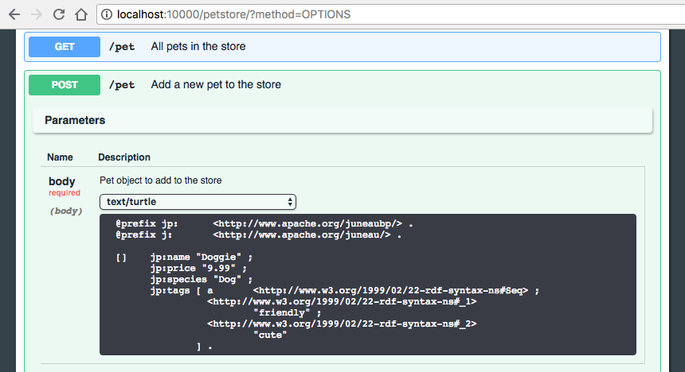

@Documented @Target(value={PARAMETER,FIELD,METHOD,TYPE}) @Retention(value=RUNTIME) @Inherited public @interface Body
Identifies a POJO to be used as the body of an HTTP request.
Can be used in the following locations:
On server-side REST, this annotation can be applied to method parameters or parameter classes to identify them as the body of an HTTP request.
This is functionally equivalent to the following code...
Also used to populate the auto-generated Swagger documentation.
Swagger documentation values are coalesced from multiple sources in the following order of precedence:
| Modifier and Type | Optional Element and Description |
|---|---|
String[] |
api
Equivalent to
value(). |
String[] |
description
|
String[] |
example
A serialized example of the body of a request.
|
String[] |
examples
Serialized examples of the body of a request.
|
boolean |
required
|
Schema |
schema
|
String[] |
value
Free-form value for the Swagger Parameter Object.
|
public abstract String[] description
A brief description of the body. This could contain examples of use.
public abstract boolean required
Determines whether the body is mandatory.
If validation fails during serialization or parsing, the part serializer/parser will throw a SchemaValidationException.
On the client-side, this gets converted to a RestCallException which is thrown before the connection is made.
On the server-side, this gets converted to a BadRequest (400).
public abstract Schema schema
The schema defining the type used for the body parameter.
This is a required attribute per the swagger definition.
However, if not explicitly specified, the value will be auto-generated using JsonSchemaSerializer.
public abstract String[] example
This is the Overview > juneau-marshall > JSON Details > Simplified JSON of an example of the body.
This value is converted to a POJO and then serialized to all the registered serializers on the REST method to produce examples for all
supported language types.
These values are then used to automatically populate the examples() field.

There are several other options for defining this example:
@ResourceSwagger (value)@MethodSwagger (value)
The latter is important because Juneau also supports auto-generation of JSON-Schema from POJO classes using JsonSchemaSerializer which has several of it's own
options for auto-detecting and calculation POJO examples.
In particular, examples can be defined via static methods, fields, and annotations on the classes themselves.
Examples can also be specified via generic properties as well using the BeanContext.BEAN_examples property at either the class or method level.
JsonParser.DEFAULT or a simple String if the object
has a schema associated with it meancan be converted from a String.
public abstract String[] examples
This is a Overview > juneau-marshall > JSON Details > Simplified JSON object whose keys are media types and values are string representations of that value.
In general you won't need to populate this value directly since it will automatically be calculated based on the value provided in the example() field.
However, this field allows you to override the behavior and show examples for only specified media types or different examples for different media types.
{ } characters are optional.
public abstract String[] value
This is a Overview > juneau-marshall > JSON Details > Simplified JSON object that makes up the swagger information for this parameter-info.
The following are completely equivalent ways of defining the swagger description of the body:
The reasons why you may want to use this field include:
{ } characters are optional.
public abstract String[] api
value().
The following are entirely equivalent:
Copyright © 2018 Apache. All rights reserved.